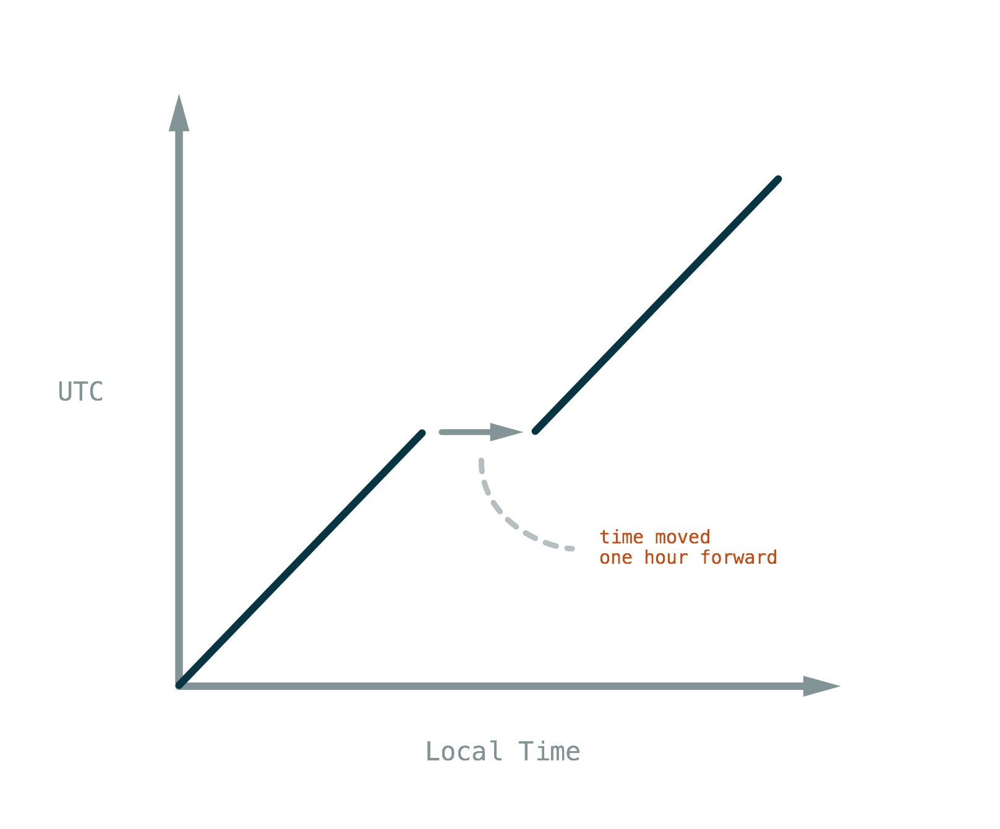
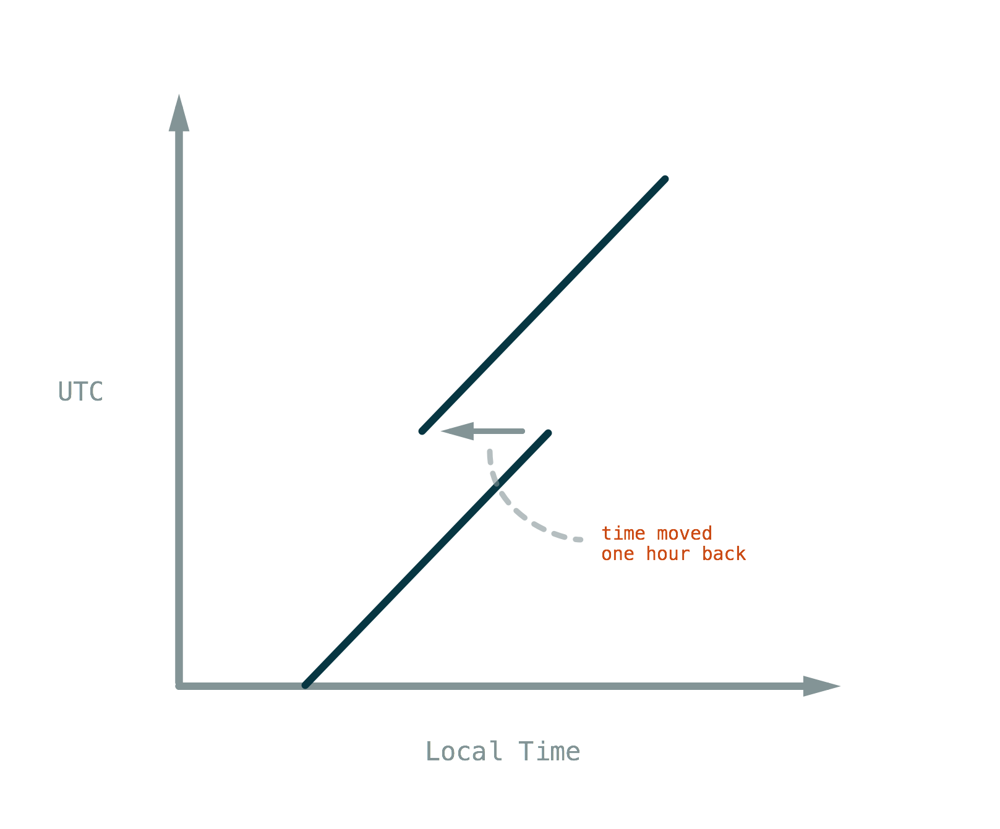
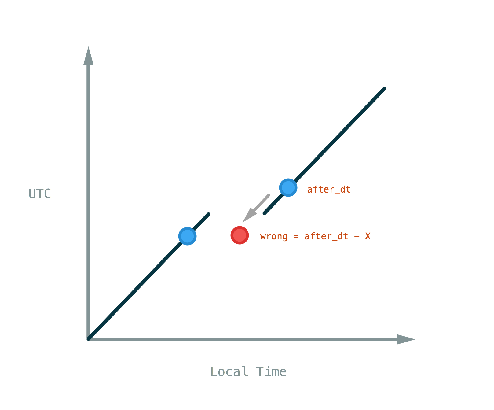
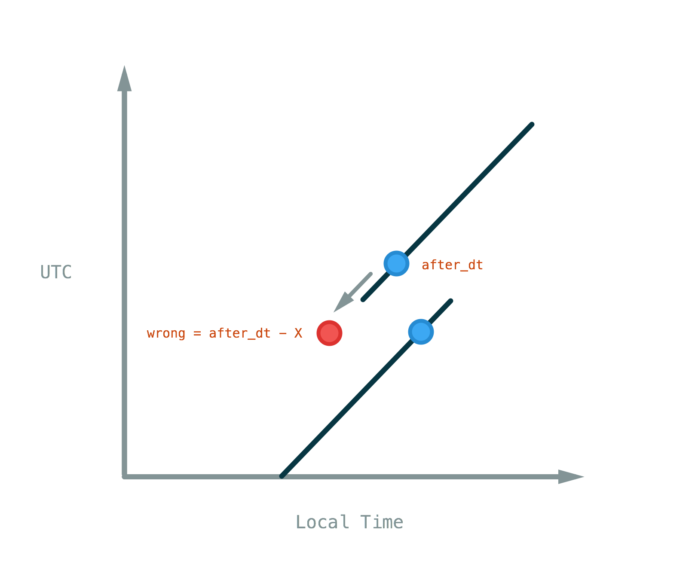
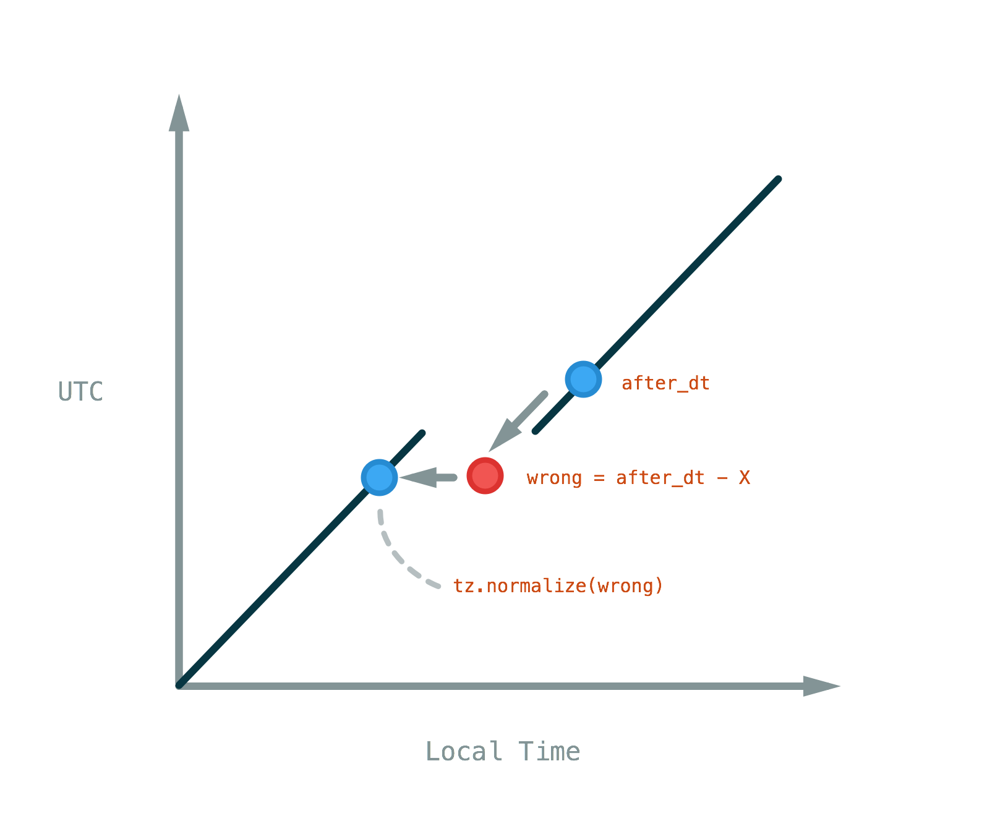
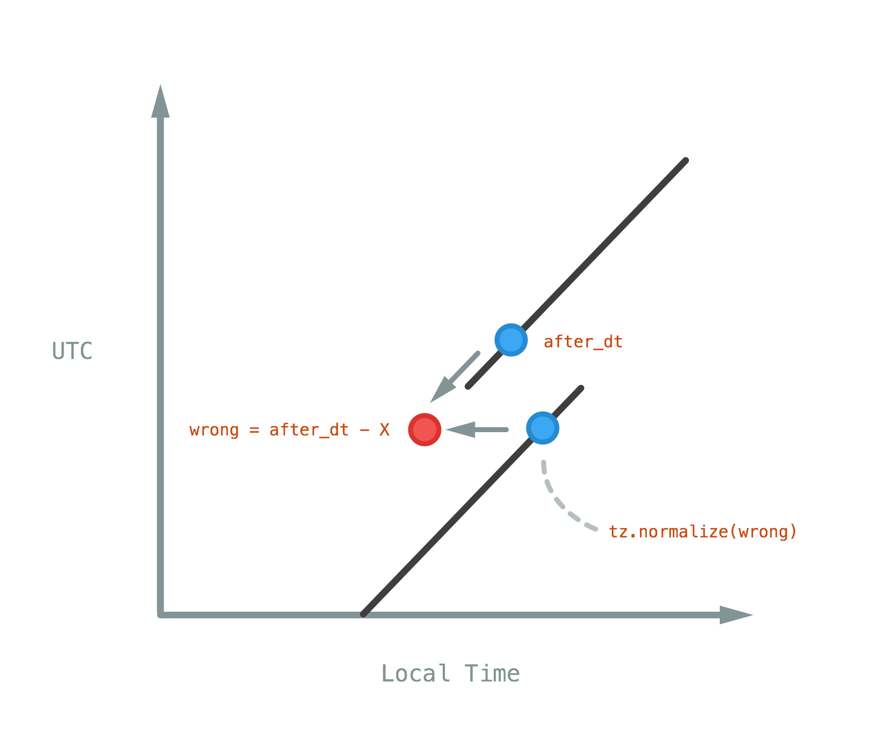

Time Zones in Pytz & Django
By Tommi Kaikkonen in 2015
Time zones, those stupid things getting in the way of shipping software! If you read the Django documentation on time zones and still feel lost, this article is for you. I'll assume you are familiar with the datetime library and know the difference between naïve and aware datetimes. I'll also assume you know some Django.
In order to understand time zones, we must start from the basics.
Time
Before we had universally synchronized times and timezones, local time was synchronized to movements of the Sun. Noon was when the Sun was at it's highest point and midnight 12 hours later. Each settlement had their own local times, which could differ by just minutes. This worked fine until trains were invented. Because local times were unsynchronized, trains collided often and schedules confused the passengers. Eventually Railway time was established in England to solve these problems. It was based on local time in London, which you probably know as Greenwich Mean Time or GMT. However, international times were still unsynchronized.
In 1876, Canadian engineer Sandford Fleming missed a train in Ireland due to a bad schedule. I guess he was pretty pissed off, since a couple years later he publicly proposed the concept of timezones. He proposed that humans adopt a single universal time, with local time zones being on an offset from it. His idea caught on quick, and 50 years later most countries were using timezones.
The concept of universal time still applies. We follow Coordinated Universal Time, abbreviated as UTC, which for our purposes is equal to GMT. We'll use UTC over GMT because it is the standard. UTC follows mean solar time, give or take a second. You would think that UTC is tracked by astronomists, but it's actually tracked with an atomic clock. To keep it synchronized with mean solar time, it's adjusted with leap seconds, forecasted beforehand by astronomists. Recently a leap second has been scheduled every few years.
Mean solar time is a convenient simplification of apparent solar time, the time a sundial tells you. Here's what it means.

Let's look at the world from the Earth's perspective. In the above image you see an imaginary sun, the Mean Sun, circling around Earth along the celestial equator. It's that horizontal line splitting world maps in half. The difference is that the real Sun circles around the ecliptic equator due to Earth's 23.4° axis tilt.
Mean solar time within any current day corresponds to the angle β of the Mean Sun to the Earth. We could calculate that angle from anywhere, but by convention we use the longitude at the Prime Meridian, located at the Royal Observatory in Greenwich, London.
The corollary is that UTC is the same no matter where we are in the world, what year it is, whether it's daylight saving time or not. There are no transitions because neither does the Sun suddenly move position, nor does the Earth abruptly rotate 360 / 24 == 15 degrees. That makes it excellent for all time arithmetic.
Time Zones
Let's forget UTC exists for a moment and start developing a simple application to be used in a single time zone. To successfully do that, we define what a time zone is.
A time zone is a geographical region where almost everyone observes the same standard time. (Wikipedia)
However, a time zone does not necessarily follow the same time all year round. If there's no daylight saving time, standard time is followed throughout the year. If there is a daylight saving time, it is followed during summer. For example, the America/Los_Angeles time zone follows Pacific Standard Time (PST), a standard time, during winter and Pacific Daylight Saving Time (PDT), a daylight saving time, in the summer. This is an important distinction. A Time such as Pacific Standard Time is not a time zone, but they are often mistakenly referred to as time zones because only a single time zone uses that Time.
Now that we know what a time zone is, let's dive into code. Our application is going to be used in Ecuador, that South American nation on the equator. And only there. Our assumption is:
- Ecuador follows a single Time, the Ecuador local time -- whatever the Ecuador officials have decided is the time.
And the code, written with that assumption:
from datetime import datetime
# We receive an interesting time from the user.
# 8:00 AM on October 5th, 2015
user_input = datetime(
year=2015,
month=10,
day=5,
hour=8,
minute=0
)
# Save it in the database.
interesting_times.add(user_input)
# Display all interesting times to the user.
for interesting_time in interesting_times:
print interesting_time
Our simple application saves interesting times to a database, where we can fetch them later to display to the users.
Let's assess if there are any problem cases with user input.
- Ecuador doesn't have daylight saving time, so there are no transitions.
- The Ecuador mainland resides within a single time zone (the Galápagos Islands are an hour behind, but we'll ignore them), so all the times submitted by users should adhere to the same time standard.
Our assumption remains intact.
If you think back to UTC and how it relates to the Sun on the equator, we are in a similar situation. Ecuador is on the equator. The local time was (hopefully) established by the officials by setting noon to when the Sun is at its highest on average, just like mean solar time. We're only using a different longitude than UTC. Using a different base than UTC is fine for our case, because we're only concerned with Ecuadorian local times.
This is the only situation where we could consider using naïve local time in our application. I put emphasis on consider, because of what happens when we make our assumptions stricter.
- Ecuador did not have, doesn't currently have, nor will ever have during the lifetime of our application, a transition to a different time.
Okay, that's pretty strict. Let's see. Countries near the equator don't have a large variance in daylight duration to warrant a daylight saving time. You'd think that would cover our asses for the past and future, and it would, if it weren't for this guy called Sixto Durán Ballén.
As the President of Ecuador, he imposed a daylight saving time in 1992. The people hated it though, and they quickly scrapped it. I'd say the transitions to daylight saving time and back to standard Ecuador time were interesting_times, no?
Let's assume that the time was moved forward 1 hour in Ecuador on 03:00 AM, March 8th, 1992. One second after 02:59:59 AM, the official time was 04:00:00 AM. With our current software implementation, the user could now input an invalid time. None of the times between 03:00:00 AM to 03:59:59 AM on March 8th, 1992 occurred. datetime doesn't know nor care.
That might not lead to big bugs, but let's consider another effect of that time transition. What if our application wanted to show the duration between the two interesting times? Julio decides to submit 02:00 AM, March 8th, 1992 as an interesting time because he met his future ex-wife in a local bar in Quito. That's one hour before the time transition. The wedding was set for the next day at 02:00 PM, March 8th, 1992. Julio wants to know the duration between these two very interesting_times. Our naïve implemenation would calculate it like so:
# 02:00AM, March 8th, 1992
first_meeting_time = datetime(
year=1992,
month=3,
day=8,
hour=2,
minute=0)
# 02:00PM, March 9th, 1992
wedding_time = datetime(
year=1992,
month=3,
day=8,
hour=14,
minute=0)
duration = wedding_time - first_meeting_time
# timedelta(hours=12)
Julio brags to his friends how he got married 12 hours after the first date. He would be acting too humble, ofcourse, as the duration was only 11 hours; a far brag-worthier achievement.
How do we deal with these cases? We could write if-conditions to deal with the daylight saving time transitions, since in Ecuador there were only two transitions. We shouldn't though, because Python offers a package that makes it really easy called pytz. It corrects datetime usage with information from the Olson Database, also called the tz database, which is basically historical data on what Time was used, when and in which timezone. It's not perfect, as I found out. It knows that there was a daylight saving time experiment in Ecuador in 1992, but no one knows the exact dates. Here's the entry:
# Ecuador
#
# Milne says the Central and South American Telegraph Company used -5:24:15.
#
# From Paul Eggert (2007-03-04):
# Apparently Ecuador had a failed experiment with DST in 1992.
# <http://midena.gov.ec/content/view/1261/208/> (2007-02-27) and
# <http://www.hoy.com.ec/NoticiaNue.asp?row_id=249856> (2006-11-06) both
# talk about "hora Sixto". Leave this alone for now, as we have no data.
#
# Zone NAME GMTOFF RULES FORMAT [UNTIL]
Zone America/Guayaquil -5:19:20 - LMT 1890
-5:14:00 - QMT 1931 # Quito Mean Time
-5:00 - ECT # Ecuador Time
What do you know, there were two other transitions: one from Local Mean Time to Quito Mean Time in 1890 and another from Quito Mean Time to Ecuador Time in 1931. The lesson here is that there are edge cases you can't possibly think of, while other people have resolved them to the best collective ability. You'd be a fool not to use pytz! It's like someone sent you a pull request that would handle all the hard edge cases in your code base, but you would decline it with a message "No thanks, I'm fine with having obscure bugs that will upset users and take me several days to debug and write fixes for".
Handling (Daylight Saving) Time Transitions
Enough about Ecuador. Our interesting_time application has received considerable interest from VC's in San Francisco, and the development team decides to move there. San Francisco follows the America/Los_Angeles time zone that observes daylight saving time in the summer. The application will be improved to handle the transitions and all other quirks using pytz. The Olson Database file on the United States is over 1000 lines long. We'll save ourselves from a lot of trouble.
With all time transitions including Daylight Saving Time transitions, there are two cases during the transition that need to be handled:
- The local time did not occur.
- The local time occured twice.
In San Francisco on 2:00 AM, March 8th 2015, the time was moved forward 1 hour to transition from Pacific Standard Time (PST) to Pacific Daylight Saving Time (PDT). One second after 1:59:59 AM, the local time was 3:00:00 AM. The times between 2:00:00 AM to 2:59:59 AM did not occur. Here's a graph that illustrates the problem:

Local Time on the horizontal axis has a gap in the transition. Note that when looking from the vertical UTCaxis, the graph is continuous.
We don't want to accept 2:30 AM, March 8th, 2015 as an interesting_time in our application. Here's how we would use pytz to recognize an invalid time.
from datetime import datetime
import pytz
# This is the user input, a naive datetime.
# We assume that the user's intention
# is to input the time in San Francisco
# local time.
user_input = datetime(
year=2015,
month=3,
day=8,
hour=2,
minute=30
)
# In the Olson Database, San Francisco is under
# a timezone called `America/Los_Angeles`.
# We grab a corresponding time zone
# instance from `pytz`.
sf_timezone = pytz.timezone('America/Los_Angeles')
# Now we'll try to make our naive `datetime` time zone aware.
# For this purpose, `pytz` offers a `localize` method on its
# timezone objects that takes a naive datetime as its first argument.
#
# By passing `is_dst=None` keyword argument to the `localize` method,
# we're telling `pytz` to raise an exception if it encounters a local
# time that occurred twice or a time that did not occur. `pytz` calls these
# times ambiguous and non-existent respectively.
sf_timezone.localize(user_input, is_dst=None)
# Traceback (most recent call last):
# File "<stdin>", line 1, in <module>
# File "/usr/local/lib/python2.7/site-packages/pytz/tzinfo.py", line 327, in localize
# raise NonExistentTimeError(dt)
# pytz.exceptions.NonExistentTimeError: 2015-03-08 02:30:00
pytz raises an exception when we try to localize a time that doesn't exist in the timezone we defined. You will have to handle this exception in your application if you don't want the user to face a server error.
Likewise on 2:00 AM, November 1st, 2015, the time was moved back 1 hour in the America/Los_Angeles time zone. Local times between 1:00:00 AM and 1:59:59 AM occurred twice. Here's a graph of the problem:

Notice how for the Local Time values during the transition, there are two possible UTC values. Once again, looking from the UTC axis, the graph is continuous.
We have a couple of choices on how to handle this.
- We could make
pytzraise an exception like last time and handle it, for example, by asking the user to clarify which timezone they meant, - let
pytzrandomly pick whether we mean Daylight Saving Time or Standard Time, or - pass in a flag ourselves if the time is in DST or not with
is_dst.
Here's how we would write these solutions with pytz.
from datetime import datetime
import pytz
user_input = datetime(
year=2015,
month=11,
day=1,
hour=1,
minute=30
)
sf_timezone = pytz.timezone('America/Los_Angeles')
# First solution: raise an exception.
# Passing in `is_dst=None` raises an `AmbiguousTimeError`.
sf_timezone.localize(user_input, is_dst=None)
# pytz.exceptions.AmbiguousTimeError: 2015-11-01 01:30:00
# Second solution: let `pytz` randomly pick the correct Time.
# We don't pass an `is_dst` flag
sf_timezone.localize(user_input)
# datetime(2015, 11, 1, 1, 30,
# tzinfo=<DstTzInfo 'America/Los_Angeles' PST-1 day, 16:00:00 STD>)
# Third solution: explicitly tell `pytz` which Time we want.
sf_timezone.localize(user_input, is_dst=True)
# datetime(2015, 11, 1, 1, 30,
# tzinfo=<DstTzInfo 'America/Los_Angeles' PDT-1 day, 17:00:00 DST>)
You probably get it now - pytz is great when you want to handle all these edge cases by importing pytz and calling a couple functions. So if we could just use pytz with local time, why would you need to know anything about UTC?
Because datetime arithmetic is far more complex when we're dealing with local times and time zones instead of UTC.
Time Arithmetic
Let's go back to the previous graphs. Let after_dt be a point in time after a time transition and let X be some timedelta time interval, so that after we subtract X from after_dt, the resulting point in time should be in a different Time (like daylight saving time). The problem is that datetime can't calculate it correctly, since it doesn't factor in time transitions. In the graphs below, what we actually receive are the red dots:


You probably saw those blue dots, the correct values for after_dt - X? A pytz time zone instance can give us a blue dot if we pass a red dot to its normalize method. normalize might sound like magic, but it's not.
The Magical normalize Algorithm:
- Convert the aware local time
datetimeto UTC. - Convert it back to to local time.
You can see how this works in the graph. We take the UTC value of wrong, and trace that UTC value back to a valid point on the Local Time graph, which leads us to the correct green dot.


Here's how it works in the code:
from datetime import datetime, timedelta
import pytz
sf_timezone = pytz.timezone('America/Los_Angeles')
# 3:00:00 AM, March 8th 2015 - the first moment after
# transitioning to Pacific Daylight Saving time.
# The previous second was 01:59:59.
after_dt = sf_timezone.localize(datetime(2015, 3, 8, 3, 0))
# datetime(2015, 3, 8, 3, 0,
# tzinfo=<DstTzInfo 'America/Los_Angeles' PDT-1 day, 17:00:00 DST>)
# 2:30:00 AM on March 8th 2015 never occurred.
wrong = after_dt - timedelta(minutes=30)
# datetime(2015, 3, 8, 2, 30,
# tzinfo=<DstTzInfo 'America/Los_Angeles' PDT-1 day, 17:00:00 DST>)
# pytz.normalize returns a corrected datetime,
# 1:30:00 AM on March 8th, 2015.
corrected = sf_timezone.normalize(wrong)
# datetime(2015, 3, 8, 1, 30,
# tzinfo=<DstTzInfo 'America/Los_Angeles' PST-1 day, 16:00:00 STD>)
If you look back at those graphs though, you might notice how the continuous nature of UTC would make time arithmetic simple. X - Y = Z and that's that.
There are other benefits to using UTC. Not all databases have equal support for aware datetimes and time zones. Postgres does, but SQLite doesn't. It is also really easy to use UTC in Django. The best practice is to convert all user input to UTC when received. Here's how you would do it:
from datetime import datetime, timedelta
import pytz
sf_timezone = pytz.timezone('America/Los_Angeles')
# 8:00 AM, June 1st 2015 in `America/Los_Angeles` timezone.
local_dt = sf_timezone.localize(datetime(2015, 6, 1, 8, 0))
# datetime(2015, 3, 8, 3, 0,
# tzinfo=<DstTzInfo 'America/Los_Angeles' PDT-1 day, 17:00:00 DST>)
# Because `UTC` doesn't have time transitions, we don't need
# to use `normalize`. Use this `datetime` internally in your
# application.
# `pytz.utc` is equivalent to pytz.timezone('UTC')
local_dt_in_utc = local_dt.astimezone(pytz.utc)
# Here's how you get the local representation back.
# When converting to a timezone with possible time transitions, use `normalize`
# to ensure it's correct.
back_to_local_dt = sf_timezone.normalize(local_dt_in_utc.astimezone(sf_timezone))
That's it, use local_dt_in_utc in your application internally, and calculate back_to_local_dt when needed to.
How Django Handles Time
The first time you set the USE_TZ setting set to True, you probably got Django nagging endlessly about datetimes in the console output. That's bad, because at some point you're going to try to compare a naïve and an aware datetime, which raises an exception. Whenever we get user input that doesn't come in through a Django form, it's naïve unless we explicitly set the time zone. However, when we get a value from a model instance that is stored in a DateTimeField, we get an aware datetime from Django. The problem here is that naïve and aware datetimes can't be compared. The aware datetime is in UTC or can easily be converted to UTC. With a naïve datetime, we just have a local time, but we dont know the location, so it can't be converted to UTC for a comparison.
Here are the rules that follow when you set USE_TZ to True:
- Django expects aware datetimes on the database layer.
- Any value you get from a model or form field will be aware.
- If Django encounters a naïve datetime, it interprets it as local time of the current time zone and logs a warning.
Hold up, what is the current time zone? From the Django docs:
The default time zone is the time zone defined by the
TIME_ZONEsetting.The current time zone is the time zone that’s used for rendering.
[...] [If the current timezone is not set, ] the default timezone is used.
Unless your application has the ability to switch timezone, or you display times in different timezones within the application, the current time zone will always be the time zone you set in TIME_ZONE. Moving on.
- Naive datetimes entered in forms will be interpreted in the current timezone, so they will be aware if you access
cleaned_dataor when calling.saveon aModelForm. - When rendering aware datetimes in Django templates, they will be represented in the current time zone. Naive datetimes are presented as-is.
And that is basically it. For our application based in San Francisco, we would use USE_TZ = True and TIME_ZONE = 'America/Los_Angeles' Django would always interpret the current time zone as America/Los_Angeles. We would not mess this up by using naïve datetimes, but then our console output would be ugly with all the warnings Django throws at us.
Example Data Flow with Django Forms and Templates
Saving a datetime to the database through a form
- User enters
8:00 AM,June 10th 2015into a Django form and submits it. - Django checks what the current time zone is. Since we have set
USE_TZtoTrueand we haven't explicitly set a current timezone, the value inTIME_ZONEwill be used:America/Los_Angeles. - When cleaning the form (calling
.is_valid), the raw input field is parsed for a naivedatetimeand then converted to an awaredatetimeby interpreting it in the current time zone. Django does this by callingtimezone.make_awareThe resultingdatetimeis aware in the current time zone, notUTC. - The cleaned data is saved to the database. The format the
datetimeis saved in depends on the database.
Fetching a datetime value from the database and displaying it through Django templates
- Our user requests a page to show all
interesting_times. - We get the times from a model's
DateTimeField. Django returns an awaredatetime. The time zone info of thatdatetimeinstance depends on the database, but it is aware nevertheless. - In the Django template, let's say we have a for loop that runs through all of our
interesting_times. For eachinteresting_time, we output{{ interesting_time.time }}. - Django templates checks what the current time zone is. Like before, since we haven't explicitly set it, it is
America/Los_Angelesfrom theTIME_ZONEsetting. - Django calls
timezone.localtime(interesting_time.time,timezone=current_time_zone)to get an awaredatetimethat represents the time with our current time zone. - Django renders a representation of the localized, aware
datetimeto the template.
django.utils.timezone
We've learned about time, time zones, why we need to use pytz, and how Django handles naive and aware datetimes and time zones. Dealing with pytz all the time can get exhausting. Luckily Django has a handy toolkit, django.utils.timezone, that makes working with pytz a breeze. The functions you'll be using the most are timezone.now() and timezone.make_aware() and timezone.localtime(). What you should do is just read their source code as they are very simple functions. Here's how they work.
timezone.now()
Returns an aware datetime representing the current point in time in UTC. ALWAYS use this when you want to get the current time in a Django application.
timezone.make_aware(naive_dt)
Interprets naive_dt in the current time zone and returns an aware datetime. When you receive naive user input that doesn't pass through a form, use this function to make it aware.
timezone.localtime(aware_dt)
Returns an aware datetime the represents the same absolute point in time as aware_dt, but in the current time zone. If you need to manually convert a datetime for user display, use this function.
Converting a datetime to UTC
django.utils.timezone doesn't offer a shortcut to convert a datetime to UTC. You could implement something like this in your own utils module:
from django.utils import timezone
import pytz
def make_utc(dt):
if dt.is_naive():
dt = timezone.make_aware(dt)
return dt.astimezone(pytz.utc)
And call that before manipulating the datetime.
If you got up to this point, you'll realize it's not that hard dealing with time zones in Django. Whenever you get a naïve datetime, call timezone.make_aware. Whenever you want the current time, call timezone.now. Before doing any time arithmetic, convert the datetime to UTC with dt.astimezone(pytz.utc). If you're passing an aware datetime to the user through Django templates, let Django take care of the conversion to local time implicitly. If you're making a representation of the time that won't be passed through Django templates, use timezone.localtime to convert the timezone to the current timezone before passing the value on.
Conclusion
There you have it. We covered the concept of time, UTC, time zones, looked at the problems in time transitions, how pytz deals with them, and how to manage time zones in Django.
If you encounter problems with a datetime value, remember to start from the basics.
- In what format is the
datetime?- If aware, in what time zone?
- If naive, what time zone should it represent?
- What format do I want it to be in?
- How do I bridge the gap between the two?
If you don't know the current format or the target format, you need to figure those out before doing anything else.
To minimize these problems, you should convert datetimes to an internal representation as early as possible, and convert back to display format as late as possible. UTC is safe, everything else is not. Django takes care of this for you in most cases, but you need to remember this when receiving input outside views and forms, and writing output outside templates.